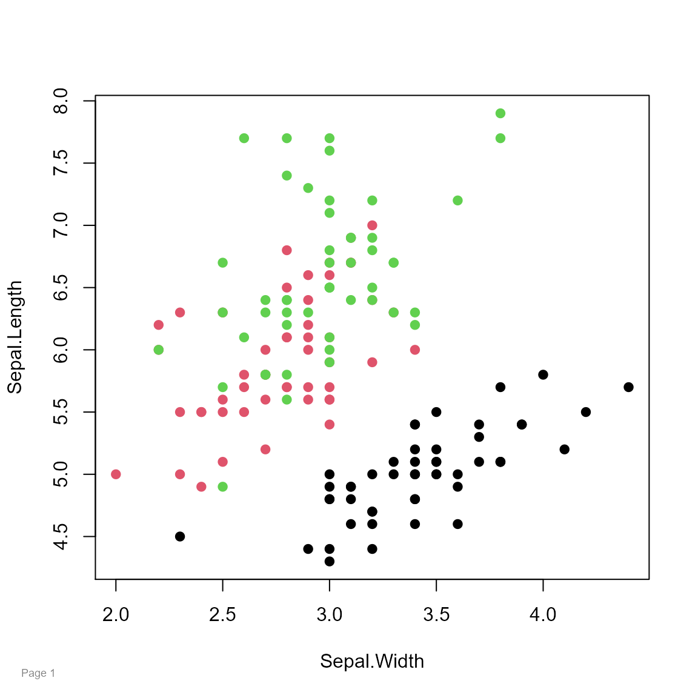
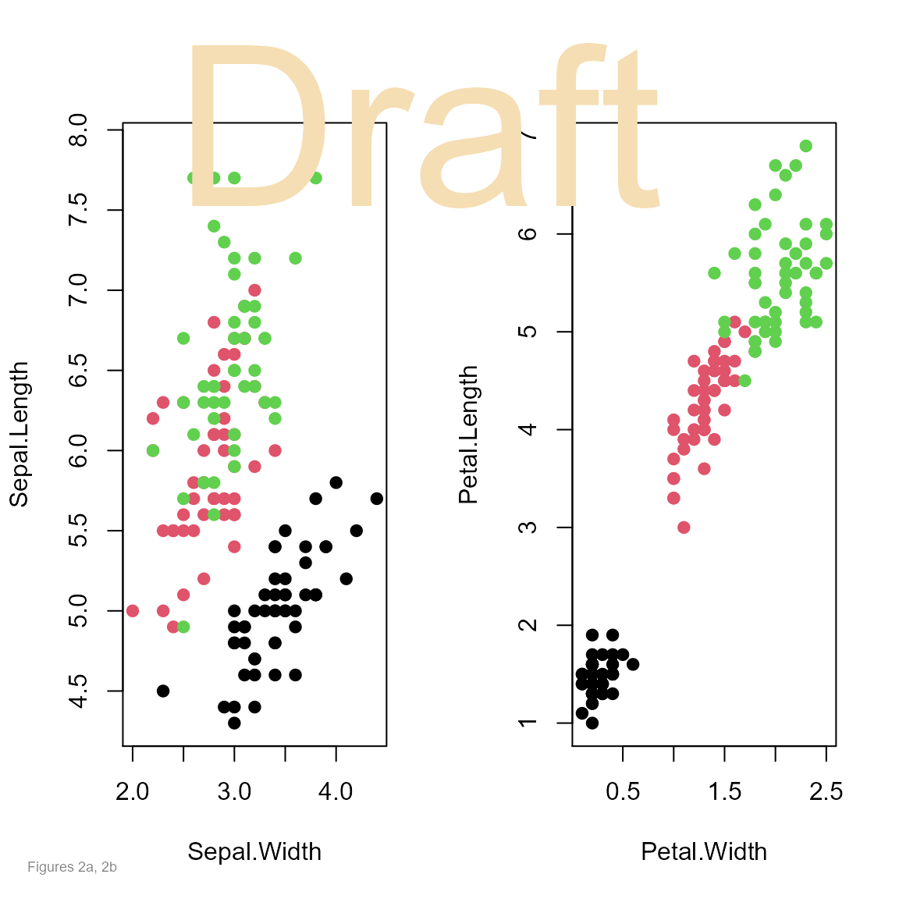
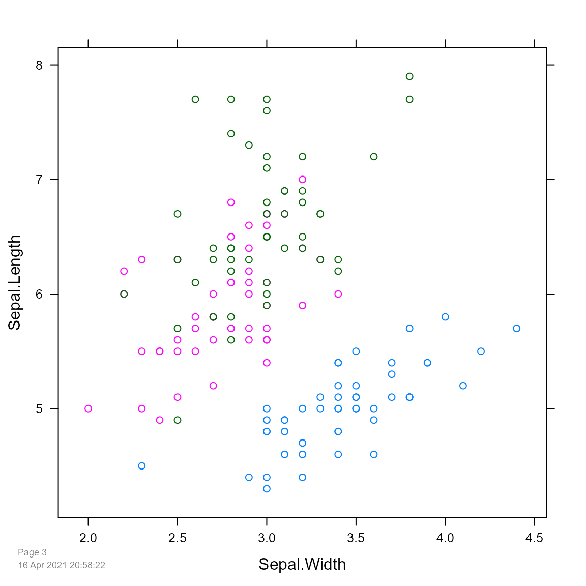
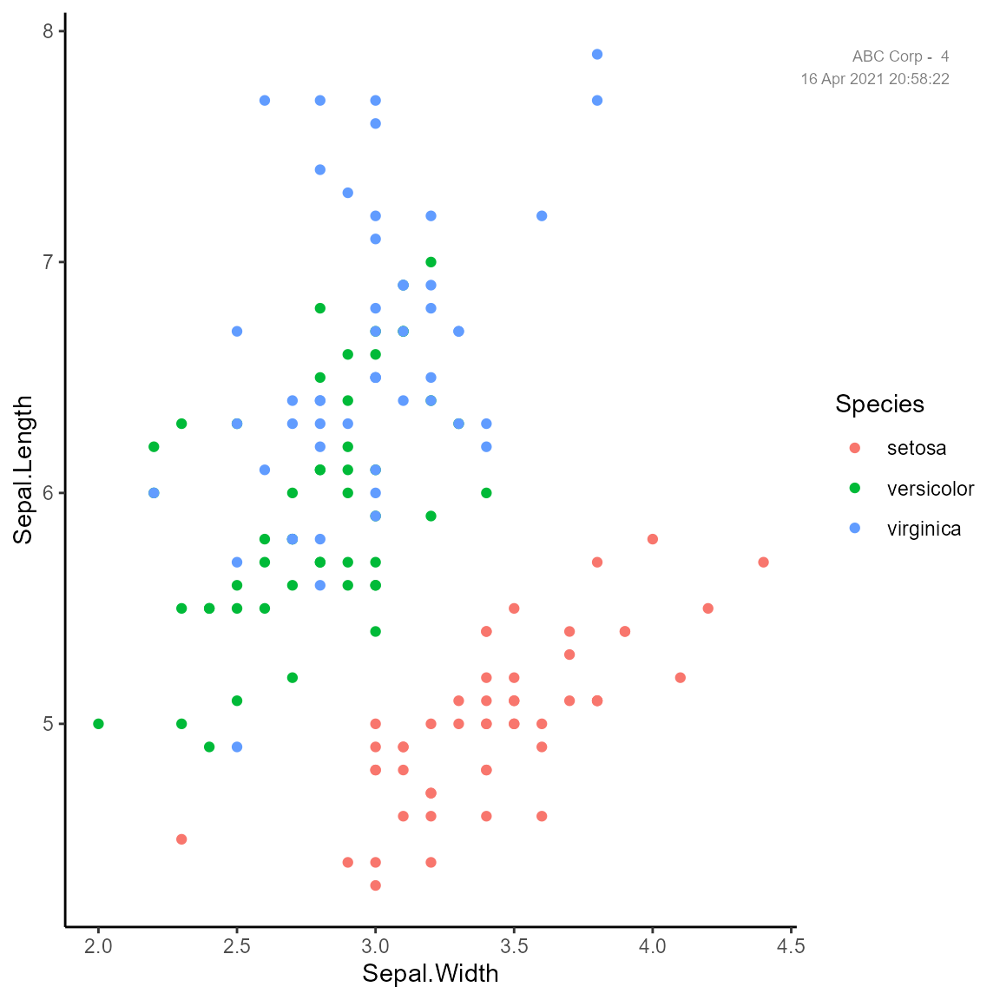

vignettes/pagenum_examples.Rmd
pagenum_examples.RmdSometimes it can be useful to add a footnote number to graphics. This package makes it easy to automatically add a time-stamp and page number to graphics. The package can also be used to add general text anywhere on any type of graphics device (base/lattice/ggplot).
library("knitr")
knitr::opts_chunk$set(fig.align="center", fig.width=6, fig.height=6)
library("pagenum")First, set the starting page number to 1. Each call of the pagenum() function will add the page number to the current graphic and automatically increment the page number counter which is stored in options().
setPagenum(1)
plot(Sepal.Length~Sepal.Width, data=iris, col=Species, pch=19)
pagenum()
If the argument num="" is used, then the page counter is not automatically incremented.
op = par(mfrow=c(1,2))
plot(Sepal.Length ~ Sepal.Width, data=iris, col=Species, pch=19)
plot(Petal.Length ~ Petal.Width, data=iris, col=Species, pch=19)
par(op)
pagenum(num="", text="Figures 2a, 2b")
pagenum(num="", text="Draft",
x=.5, y=.95, just=c('center','top'),
col="wheat", cex=3)
setPagenum(getPagenum()+1) # Manual increment
library("lattice")
xyplot(Sepal.Length~Sepal.Width, data=iris, groups=Species)
pagenum(date=TRUE)
library("ggplot2")
ggplot(iris, aes(x=Sepal.Width, y=Sepal.Length,
color=Species)) + geom_point() + theme_classic()
pagenum(text="ABC Corp - ", date=TRUE,
x=.95, y=.95, just=c('right','top'))